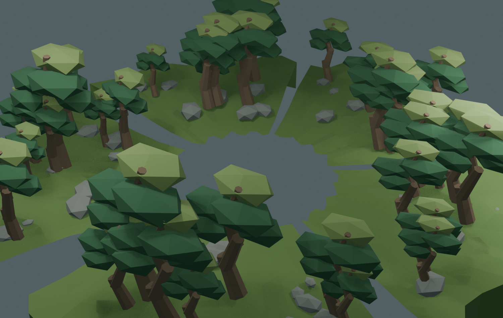

苔庭外部五区 · 静态隐蔽环境
鲲背苔庭隐藏在相近的外部景观中。五片连续的苔坡、林缘和石组围出中央起飞口：静止时，鲲的轮廓被相同的苔庭语言打散；触发后，鲲与背上的原作苔庭从中央升起，外部五区留在球面世界上。

静态五区
- 入口苔径：低处苔坡与入口树群
- 主石之庭：背侧石组与高松
- 枯瀑之庭：干岩脊与林缘，不使用瀑布
- 苔海岛群：水侧苔坡和稀密相间的松组
- 回望石组：后侧石组与观景林
中央不添加新地面或碰撞；蓝盔伏击、重甲登陆、鲲背苔庭和原作支撑网格继续使用原有系统。
已导入 Godot：资产清单 · 静态世界接入脚本 · 苔庭之战总览